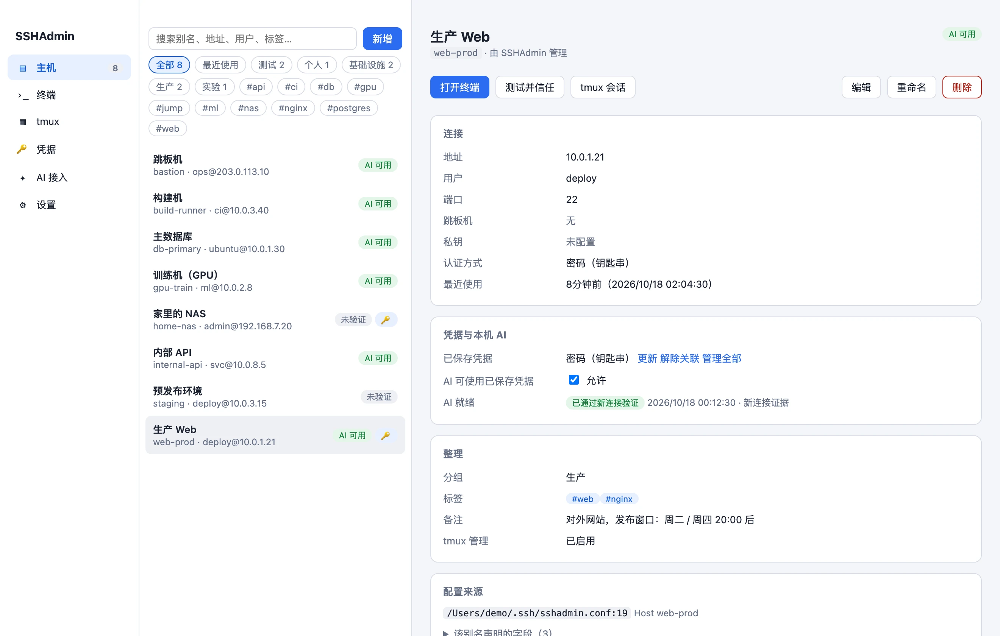
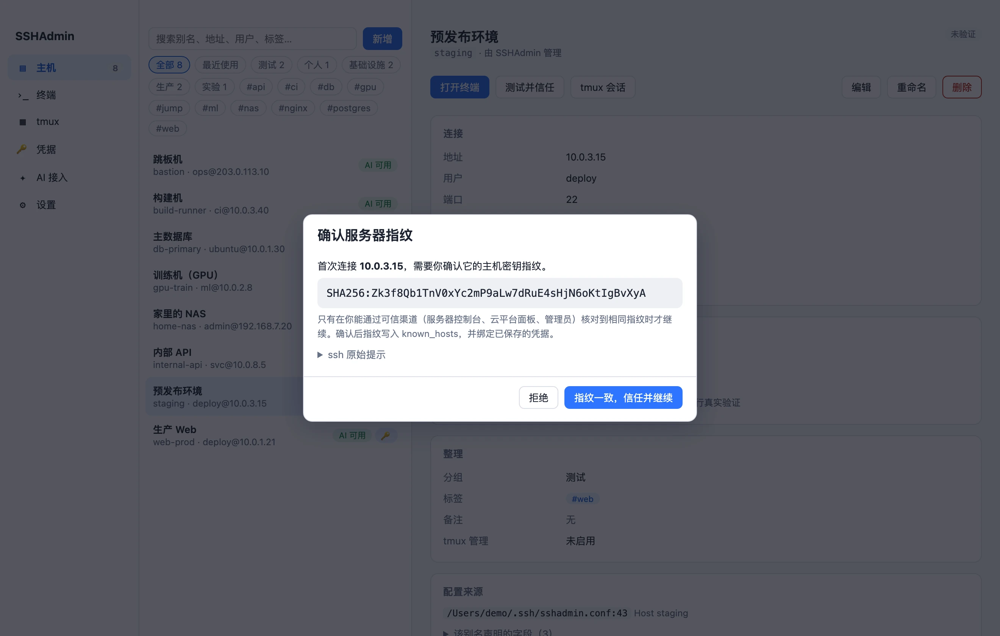
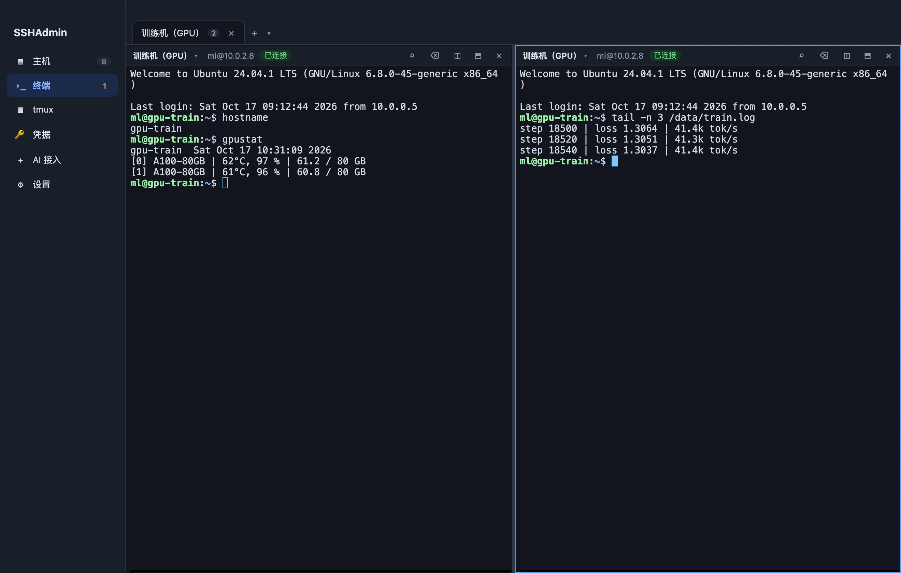
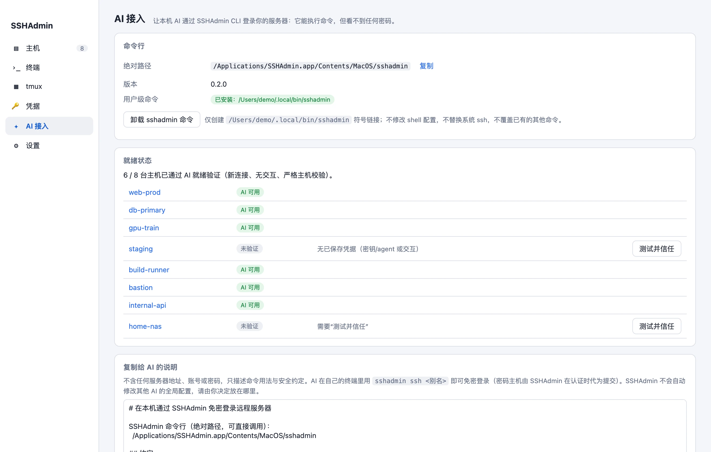

密码只进钥匙串
不写进配置文件、数据库、日志、命令行，也不会出现在导出的文件里。
功能
把散在各处的 SSH 小事，收拾成一个顺手的工作台。
主机
自动读取你现有的 ~/.ssh/config，分组、标签、备注、搜索一应俱全。新增和修改之前，先给你看清楚要写什么。

凭据
密码和私钥口令只保存在 macOS 钥匙串。私钥只引用路径，从不读取、不复制。每台服务器第一次连接，都由你亲自核对指纹。

终端
标签、分屏、搜索，像本地终端一样顺手。关掉软件也没关系：服务器上的 tmux 会话照常运行，下次打开，一键接回。

安全
你的密码，只在需要的那一刻，交给你确认过的那一台服务器。
不写进配置文件、数据库、日志、命令行，也不会出现在导出的文件里。
第一次连接，必须你亲自核对服务器指纹，才会被信任。
地址、用户、端口或跳板机一变，已保存的密码立刻拒绝使用，等你重新确认。
密码只在认证那一刻，经私有通道交给确认过的那一台服务器，最多一次。
想收回 AI 的权限，把这台主机的开关关掉就行，随时生效。
没有账号，没有云端；不在服务器上安装软件或公钥，也不替换系统自带的 ssh。
AI 接入
AI 在它自己的终端里运行 sshadmin ssh <别名>，就像你亲手登录：没有超时，没有输出上限，管道和端口转发都能用。密码由 SSHAdmin 在认证那一刻代为提交，AI 全程看不到。
ai@mac:~$ Filesystem Size Used Avail Use% Mounted on /dev/sda1 98G 60G 34G 64% / /dev/sdb1 1.8T 1.4T 380G 79% /data

还有这些
常见问题
不会上传。SSHAdmin 没有账号体系，也不连接任何云端；它只在本机读取你的 SSH 配置，并通过系统自带的 OpenSSH 连接你自己的服务器。
不需要。SSHAdmin 不会在服务器上安装软件，也不会替你部署公钥。使用 tmux 功能时，服务器上需要已经装有 tmux。
密码只保存在 macOS 钥匙串，登录时在认证那一刻才交给你确认过的那台服务器。如果想要更强的保护，仍然推荐使用私钥登录——SSHAdmin 两种方式都支持。
不需要接入任何插件。在「AI 接入」页安装 sshadmin 命令，再把页面里的说明复制给 AI，它就能在自己的终端里使用。SSHAdmin 不会改动其他 AI 工具的全局设置。
不会。系统的 ssh 保持原样，sshadmin ssh 只是多出来的一个入口。
目前提供 Apple 芯片（M 系列）的 Mac 版本，需要 macOS 12 及以上。
应用源码暂不公开。GitHub 产品发布仓库提供官网、使用文档和成品下载，也可以在那里反馈问题。
版本 0.1.0 · macOS 12 及以上 · Apple 芯片（M 系列）
当前为本地签名版本，尚未经过 Apple 公证。第一次打开如果被系统拦截，请到「系统设置 → 隐私与安全性」中选择“仍要打开”。
.dmg f452f74a0d2dbdf907e54f1220951122e396187806189d2e4a62ae624330ee91
.zip 714ab614b4f90c52831544f1d1abcf37320ddd4b312985980b5013c0b9b248b0